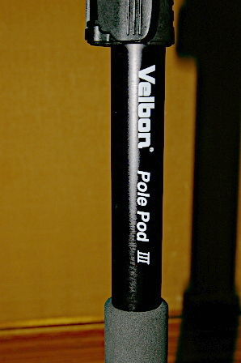

2018 年
09 月 24日 ( 月 )
Velbon Pole Pod III が届いたのでお触りしてみた
Velbon Pole Pod III が届きました。下の写真のように本体とケースがついています。
がケースがいけてません。K&F Concept KF-TM2324 のケースと違って薄いナイロン製ですぐにいかにも安っぽくすぐに破けてしまいそうです。それだけでなく下の写真を見て下さい。
雲台のクランプがケースに収まりません。ケースの長さが短いんです。それはアルカスイス互換クランプを通常のクランプ上に取り付けているからでは？とツッコミが入りそうですが、よく見て下さい。Pole Pod III のクランプのクイックシューのレバーもちゃんと (？) ケースからはみ出ています。
せっかく付属してるのですから、家での保管時に一応使いますけどね。でも外では使わないでしょう。通行人への安全にも一切寄与しないでしょうし。ケースは自作しないといけないかもしれません。
で本体には自信たっぷりに Velbon Pole Pod III という刻印が見られます。メーカーの自信のほどが見て取れますね。

早速一番長く伸ばしてみました。三脚部分も最も安定するように一番広げ、脚も最大限に伸ばしています。
高さは 176.5cm の身長の私を軽く超えます。高い！！
ですがね、揺れるんですよ、これが。一番上の段を下げきって私の目線より低い位置に雲台がくるようにしても、触るどころかちょっと指が触れただけで揺れるんですよ。
つまりこの製品は三脚の代わりには使えません。一脚にわずかばかりの安定性を加えた性質の製品になります。自立させるのは転倒の危険性があまりにありすぎるのでやめておいた方がいいです。転倒してカメラが壊れたら洒落になりませんし、ポールが倒れた先に子供がいたりして怪我をさせてしまったら取り返しがつきません。
この製品を使う時は一脚と同じで、撮影時に最後の最後に取り付け、それ以降は決して手を離してはいけません。わずかな風が吹いただけで倒れます。
ポールの長さを調整するロックはレバーロックが採用されています。片手で調整するには便利かもしれません (もう片方の手は製品が倒れないようにポールを持っていないとだめですから)。

でも結局長さを調整する時は両手でポールを握ることになるのでナットロックでもいいような気もします。ですが、カメラを雲台に取り付けたままポールの長さを調整する行為はカメラを振り回すことになってしまい、周囲の人に怪我をさせてしまう危険性があります。ポールの長さの調整は雲台にカメラを取り付ける前に周囲の人の安全に気をつけながらするべきです。
三脚部分の石突はいたって普通のゴム製です。安価な製品なので当然かなと思います。
三脚部分は 3 段階に広げることができます。
まず最初に一番狭い状態です。
次に二番目に広げた状態です。
最後に最も広げた状態です。
当然最後の脚の広げ方が最も安定しますし、脚も伸ばしたほうがもっと安定します。それでも揺れますけど。
脚の開き方のロックは、脚の根本の爪を脚の切り抜きの段差にはめ込む式の Velbon 固有の方式です。この方法に Velbon がこだわるのは特許でも取ってるんですかね？他の方式と違って爪をスライドさせないといけないので若干扱いにくく感じます。
雲台は小ぶりですが自由雲台です。クイックシューがついています。
クランプ部分をアルカスイス互換のクランプに交換したいなぁ、と思ったのでクイックシューを外すことができるかどうか、プレートを外してみました。
ネジもなにもありません。どうやらボールからクランプ部分だけ取り外すことはできないようです。なので雲台の交換という手もありますが、それだとお金がかかりすぎるので
見た目は不細工ですがクイックシューのプレートに手持ちのアルカスイス互換クランプを取り付けることにしました。
ところでこの Velbon Pole Pod III は下の写真のように分解することができます。雲台や三脚部分を回すだけなので取り外しは簡単です。
ネジの規格は普通に 1/4 規格です。なので下の写真のように三脚部分と雲台を取り付けてミニ三脚のように使うことができます。
それとこれまで触れてきませんでしたがセンターポール部分が 3cm 程ですけど上下させることができます。一応エレベーターなんです。
エレベーターの固定は脚の付け根付近に写っているノブを締めることで行います。
さて、分解した後のポールですがこいつを普通の一脚として使うことができます。そのための手順を説明します。
ポールの上部には下の写真のようなネジがついています。
ネジのてっぺんにいかにもドライバーで回してくだいと言わんばかりの切れ込みが掘ってありますね。なのでマイナスドライバーで緩めてやると下の写真のようにネジを外すことができます。
ネジを外した後のポール上端は下の写真のように 1/4 の穴が空きます。
三脚を外したポールの下端には下の写真のように 1/4 の穴が空いています。
この穴にさっき外したネジをドライバーでねじ込んでやります。
するとポール下端に雲台を取り付けることができるようになります。
次はポールの上端側です。この製品には付属パーツとして写真のような石突がついています。
ネジのサイズはやはり 1/4 です。ここでドライバーを使ってネジを外して下端部に取り付けたためにポール上端部に 1/4 の穴が空いていることを思い出しましょう。

ここにさっきの石突をねじ込みます。
一脚の完成です。
一脚として使う時はポールを上下逆さまに使うわけですね。
今 Velbon Pole Pod III を一脚として使うための手順を見てきたわけですが、見てきたとおりドライバーやそれに代わるもの (私は Victorinox を使いました) が必要ですし、むちゃくちゃ手間がかかります。はっきりいってこの製品の場合はそのまま使うのがいいんじゃないでしょうか。だって一脚なら Manfrotto の方が安くて品質がいいでしょう。
それで気になる耐荷重ですがカタログ上は 2kg とあります。自宅にある Canon EOS 7D だと 2kg を超えてしまうのでさすがにだめだろうということで 1kg を切りますが LUMIX のコンデジを載せて、雲台を斜めにしてみました (転倒の恐れがあるのでとてもお勧めできませんが)。
ぱっちり固定されます。耐荷重 2kg という数字は K&F Concept と違って信じてもいいんじゃないでしょうか？
とまぁ若干きびしい所感をこれまで述べてきましたがそれは三脚の代用として考えていたからであって、あくまで若干安定性を増した一脚と考えるならば充分な製品なのではないでしょうか。すぐ上の写真も当然手を離して撮ってますし。
- Category :
- 日記
- カメラ
- 写真
- Velbon
- 三脚
- 一脚